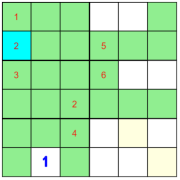
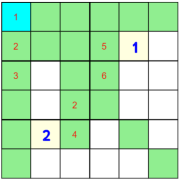
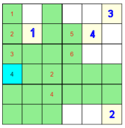

Strategien zum Programm SudokuX
Ausgangslage ist aktivierte Checkbox bei 'Nicht mögliche Felder für Ziffer' und die dort aktivierte Ziffer.Strategie 1: In einem nichtgrünen Feld, das allein in einer Zeile, in einer Kolonne, in einer Box oder in einer Diagonalen steht, muss die aktivierte Ziffer stehen.
Bsp: Im Feld 1 muss die Ziffer 2 stehen, da das Feld allein in einer Kolonne steht.Strategie 2: Löscht eine Setzung alle Felder einer anderen Box aus, so kann die Ziffer nicht in diesem Feld stehen.
Bsp: Im Feld 1 muss die Ziffer 1 stehen, da eine Setzung im sonst noch einzig möglichen Diagonalfeld 2 alle Felder der darüberliegenden (mittleren linken) Box auslöschen würde.Strategie 3: Weiterführende Strategie von Strategie 2
Bsp: Die Ziffer 4 muss in einem der beiden noch möglichen Diagonalfeldern 1 oder 2 stehen. Sie kann nicht im Feld 2 stehen, da sonst eines von zwei möglichen Feldern in der darüberstehenden mittleren rechten Box ausgelöscht würde, das Diagonalfeld 3 ausgelöscht würde, somit nur noch Diagonalfeld 4 übrigbliebe, diese Setzung aber das zweite noch mögliche Feld der erwähnten Box auslöschen würde.Also muss die 4 im Feld 1 liegen.
Lösungsverfahren
Eine mögliche Grundstrategie: Aktivieren Sie der Reihe nach die Ziffern 1 bis 6 (bzw 9) bei 'Nicht mögliche Felder für Ziffer'.Gehen Sie pro Ziffer die Strategien 1, 2 und 3 durch. Nach der letzten Ziffer beginnen Sie wieder von vorne, bis keine Ziffer mehr gesetzt werden kann.
In vielen Fällen haben Sie dann das SudokuX schon gelöst.
Wenn nicht, so wählen Sie eine Ziffer, bei der es noch genau 2 mögliche Felder gibt. Machen Sie eine Zwischenspeicherung mit 'Save'. Setzen Sie nun die gewählte Ziffer in eines der beiden Felder ('Versuchssetzung').
Fahren Sie fort gemäss der oben angegebenen Grundstrategie. Falls Sie einen Widerspruch bemerken, so laden Sie mit 'Load' den vorher gespeicherten Zwischenstand und setzen die gewählte Ziffer ins zweite Feld.
Falls Sie vor Bemerkung des Widerspruchs wieder keine eindeutige Setzung machen können, so müssen Sie eine zweite 'Versuchssetzung' machen.